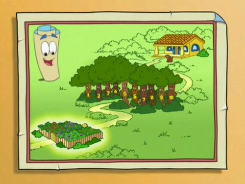
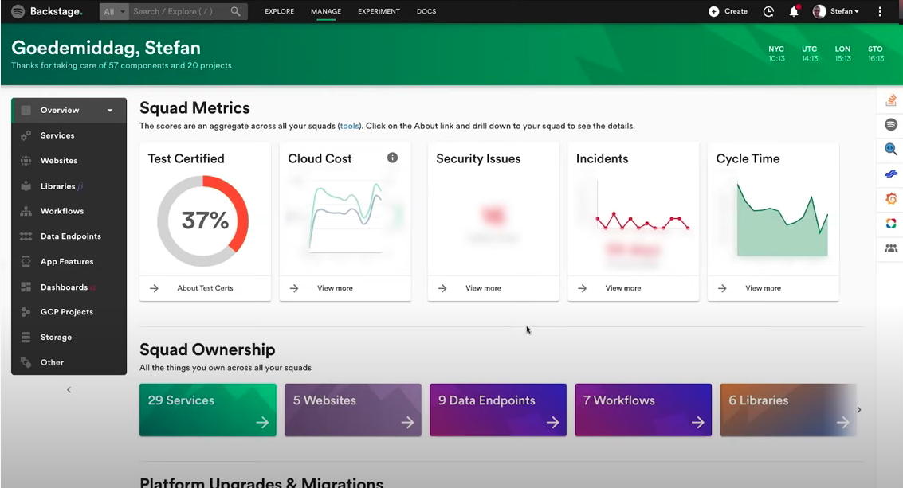

backstage.io
&
introductions
Overview
- What is Backstage?
- What problems does it solve?
- Discovery
- Productivity
- Standards
- Demo
- What's on the roadmap?
- Current issues
- Alternatives
- Questions and discussion
What is Backstage?
- An open platform for building developer portals!
- Software Catalog
- Software Templates
- TechDocs
- Kubernetes
- Plugins
What problems does it solve?
- quite hard to describe in terms of being able to fit into an existing product category
- does indeed solve very real and very recognisable problems for organizations
- Rather than trying to explain what "it is", more useful to describe what problems it solves and how.
Discovery - you don't want to be the map!

Discovery - so many questions
- How do I get a new repository/build?
- Where is the data I need for my service?
- How do I access the data I need?
Discovery
- Software Catalog (alpha)
- TechDocs (beta)
Productivity - as you grow so does complexity
- Life is easy with a single development team
- Harder to make things easy to ship with many teams
- Harder to deploy when you have many technologies
- Harder to onboard users
Productivity - example questions
- How does a dev get productive on Day 1??
- How do we make it easy to create new services?
- How to we make it easy for a development team to see all the services they own?
Productivity
- TechDocs
- Automatic docs site creation
- Documentation in same repository as code
Standards
- How do we ensure software has owners?
- How do we deal with cross cutting concerns?
Standards
- Kubernetes
- Dashboards are focused on "service owner" POV rather than "cluster admin"

Standards
- Kubernetes
- Can add plugins for things like unit test coverage
- Add plugins for auto visualisation tools like Grafana
Current issues
- No support for things other than Kubernetes
- Build/compile it yourself and create your own images
- Everything's a plugin!
- Need someone looking after this that knows K8s, Docker, programming/SDLC etc...
Questions and discussion, house take